Currently UX Designer @ Plymouth Rock Assurance.
Previously Lead Senior Designer @ Scratch Marketing + Media.
Product designer with 10+ years in branding and UX, shaping digital products across SaaS, biotechnology, and insurance. I turn messy requirements and complex workflows into clear tools for customers and internal teams, balancing user needs, technical realities, and business goals.
Outside of work: I am fueled by SodaStream, working on containing a growing collection of vinyl, DVDs and board games and will use any opportunity to talk about PC gaming.
Redesigning a complex operational workflow into a clearer, more efficient experience, without oversimplifying the technology behind it.
Role
Lead Product Designer
Team
Digital Strategy, Claim Ops, Development
Platform
Internal web tool
Timeline
2025–2026
+ The Challenge
Not less information. The right information, at the right moment.
eDispatch is a digital tool that insurance appraisers, adjusters and claim agents utilize to support claims and estimating auto and home damages. The job wasn't to cut what was on screen. It was to decide which information mattered, when it mattered, and how the interface could help people decide faster.
The tool was one part of a whole ecosystem with multiple supporting tools that appraisers and dispatchers have to use to complete their job. Each piece did its job on its own. The trouble was everything in between: nothing talked to anything else, so the dispatcher became the integration layer, making them hold the full picture in their head.
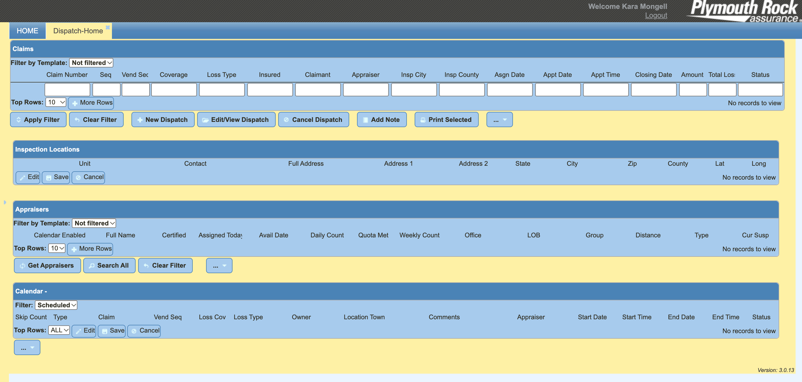
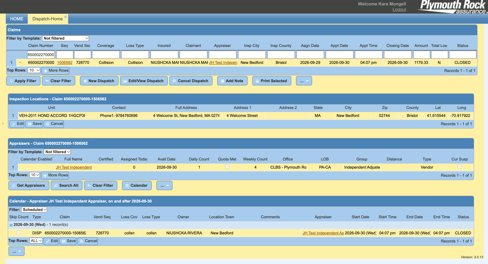
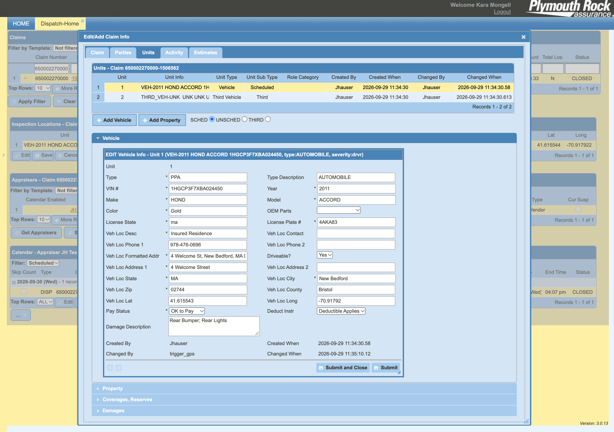
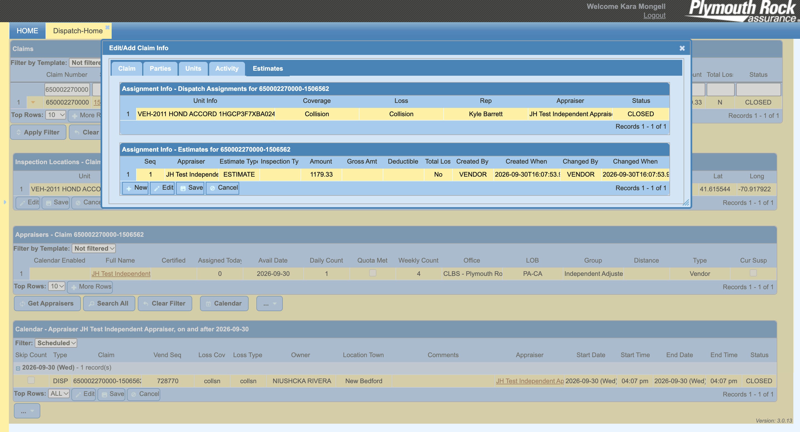
Where to start? Outdated information hierarchy.
+ Reframing the Problem
The original ask
"We have two versions of this and it's outdated. Can we update the existing tool and migrate the tool into one?"
The real problem
How might we make a complex operational system feel understandable and efficient for the people using it every day?
A visual refresh would have made each broken piece look better and left the gaps between them untouched. Reframing the brief around the full workflow changed the project's scope, the success metrics, and who needed to be in the room.
So I didn't treat this as a visual redesign. I treated it as a workflow and information-design problem.
+ Finding the Root Cause
Watch the work, not the software.
I interviewed various people with different roles to understand how exactly the workflow is experienced. Watching them work revealed where gaps were and how different it is for different role types.
Multiple stakeholder and user interviews...
Spoke to claims operation directors, adjusters, appraisers — associates and supervisors — to learn what their day-to-day looks like using the tool.
...led to an end-to-end workflow map
A visual of every step from intake to assignment, color-coded by tool, with each handoff and failure point marked.
After listening to the users, I sat down and mapped out all the tools and touchpoints for each user type. I wanted to see how each of these pieces related to the others.
+ Key Decisions
Three decisions shaped by research
Six stakeholder interviews and a prototype test with three claims users pointed the redesign toward speed, structure and fewer systems.
01
Guided flow over an all-in-one table
GRPVirtualStaffIAPTL
Next: Search All for experienced reps
Insight
Reps offer options in a set order, but the legacy tool showed everything in one table.
Decision
Selection follows that conversation, one step at a time.
Result
Matched how most testers work. Power users asked to see every option at once.
02
Designed for the live phone call
NameTypeDistance
Shop address + phone
Copy
Insight
Nearly all dispatches happen live, then reps text shop details to the customer.
Decision
Key fields stay visible without scrolling. Address and phone lead each profile.
Result
One-click copy and auto-texting became the clearest next step.
03
One connected system, not another silo
Legacy DispatcheDispatchClaimsProMitchell
One dispatch tool, synced to the claim
Insight
Every participant switched between four tools and re-entered the same data.
Decision
One tool, launched from the claim, with changes syncing back.
Result
Auto-sync drew one of the strongest reactions in testing.
+ The Solution
The platform in action: searching a claim, reviewing its details, then transmitting the dispatch to a vendor.
Transferring a dispatch had to be effortless — stakeholders needed it fast during high-CAT events and workload balancing.
Images and documents lived across too many tools. We wanted one single source of truth for every asset tied to an estimate.
Expanded prototype available for a walkthrough.
+ What I Learned
Question the brief. The request was a redesign. The problem was a workflow. Pushing back early, with evidence, saved the team from polishing the wrong thing.
Field people are users too. People who are out on the road are not often questioned about the tools they use. Getting a chance to speak to them and show them concepts was rewarding in itself because they shared appreciation of being asked to be part of something.
Trust is a rollout strategy. Shipping in phases let Claims Ops see results before being asked to give up legacy tools they knew.
app downloads in 6 months after the relaunch I led
$0 → $1.1M
client divisional revenue in under a year
Current June 2021 Present · Boston, MA
Plymouth Rock Assurance
UX Designer · formerly Associate UX Designer
Native Mobile AppInternal ToolsClaimsAI-enabled ResearchAI Prototyping
+Led UX/UI design for the relaunch of a native mobile app, streamlining the insurance experience for policyholders. Continued driving mobile-first strategy for policy endorsements, claims processing, and telematics.
+Led the redesign of multiple legacy internal systems with broken workflows, partnering with stakeholders and interviewing end users. Projected to reduce system errors and improve response times for claim dispatches.
+Worked with developers to design a voice-only [finish this line].
+Designed across multiple digital products with a customer-focused, iterative process, from business and IT requirements through delivery.
June 2016 June 2021 · Cambridge, MA
Scratch Marketing + Media
Senior Design Lead · formerly Senior Graphic Designer and Graphic Designer
BrandingWeb DesignMarketing Campaigns
+Conceived and implemented concepts, guidelines, and strategies from ad campaigns to website builds, including a campaign that took a client's division from $0 to $1.1M in revenue in under a year.
+Launched multiple websites at a range of scales, from branding and concept through wireframes, prototypes, and hand-off to development.
+Worked with VPs on scheduling and project management, and managed up to two junior designers.
+Created UX/UI best-practice guidelines for the agency's growing web design practice.
Feb 2015 June 2016 · Cambridge, MA
NuoDB
Marketing & Design Intern
+Updated templates to follow newly redesigned brand guidelines.
Letting customers explore a policy change before committing to it.
Role
UX Designer
Team
Digital Strategy, Product, Development
Platform
eService, Mobile App, Agent Web
Timeline
August 2026
+ The Challenge
A policy change shouldn't require a commitment.
Customers who want to add a vehicle or a driver often just want to know what it will cost. The existing endorsement experience assumed they were ready to complete the change right away, or sent them to the phone for help.
The goal was to let customers start, save, and return to a quote on their own, and to let agents and employees continue the same quote alongside them.
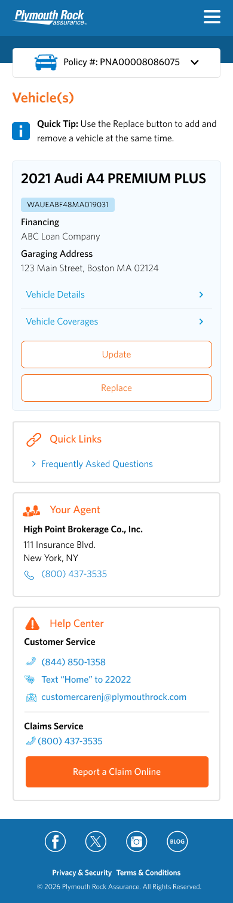
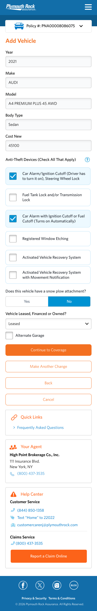
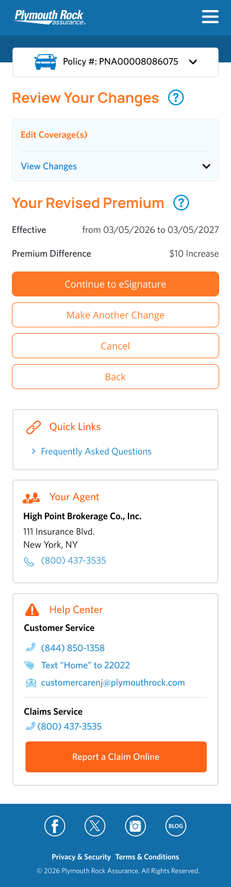
+ Reframing the Problem
The original ask
"Let customers save an endorsement in progress."
The real problem
How might we let people price a policy change without feeling like they've made one?
Saving was the feature. The real work was the line between a quote and a commitment: what the customer sees, what the system changes, and who else can pick the quote up.
+ Key Decisions
Rules, translated into design
The requirements were precise. The job was making them feel simple.
01
A quote is never mistaken for a change
Start/Continue Quote
Make a Policy Change
The rule
A quote must never change the policy, and must be clearly different from an endorsement.
The design response
Two doors at "Update Policy," a Quote or Endorsement label on every screen, and the line "No changes have been applied to your policy."
What it protects
The customer's confidence that exploring costs nothing.
02
Ask for less, carry everything forward
YearMakeModelOwned or financed
VINOptional
The rule
Partial data is allowed for a quote, but required at submission.
The design response
Ask only for the minimum to price the change, tag the rest as optional, and ask only for what's missing at conversion.
What it protects
Momentum, so people don't stall over a VIN they don't have yet.
03
Saved automatically, with the terms in plain sight
Quote saved until MM/DD/YYYYResume
Reminder email two days before it expires
The rule
Quotes autosave, expire after 7 days of inactivity, and only one can exist per policy.
The design response
A visible expiry date, a reminder two days out, a continue-or-replace prompt, and clear messaging when someone else has the quote open.
What it protects
Trust in what's saved, with no surprise deletions.
+ The Solution
01
Choose a path
Start or continue a quote, or make a policy change. The screen always says which one you're in.
02
Enter the minimum
Only what's needed to price the change. Everything else can wait.
03
See the estimate
Current premium, estimated new premium, and the difference, saved automatically.
04
Save and close, or process
Come back within the saved window, or convert the quote into an endorsement.
The core flow in the mobile app. Nothing changes on the policy until the customer processes the change.
Saved quotes appear on the homepage with an expiry countdown. Resuming one lands on the premium screen with a summary of the change and the quoted premium.
If a quote already exists, the customer chooses to continue with it or start a new one.
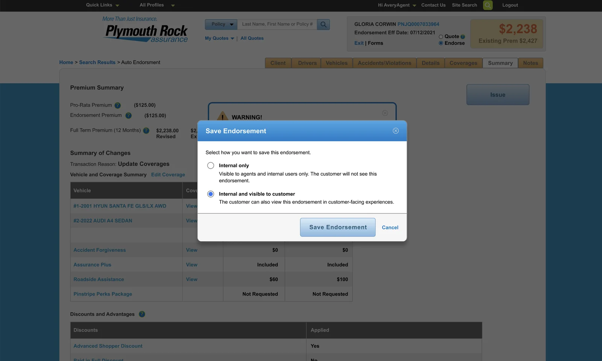
In Agent Web, agents choose how to save: internal only, or visible to the customer in customer-facing experiences.
Expanded prototype available for a walkthrough.
+ Designing for the Edges
The cases that make or break trust.
Locked quotes
Only one person can have a quote open at a time. Anyone else sees a clear message to try again later.
Past effective dates
Quotes can't be backdated. Retrieving one with a past date prompts for a new date and reprices.
Renewal overlap
When a renewal is already issued, the estimate shows both the current and renewal terms.
One quote per policy
Starting a new one asks first: continue the saved quote, or replace it.
Blocked endorsements
Rating and saving still work. The block is checked after rating and before issuing.
Rating errors
If rating fails, inputs are kept and the customer can retry without starting over.
+ What We're Measuring
Planned signals to watch.
This enhancement hasn't launched yet at the time of creating this case study. These are the metrics planned to watch and learn from once it does, tracked across eService, the mobile app, and Agent Web.
Quotes started How many people tap Save for Later and see the confirmation modal
Quotes saved How many people actually save the quote
Quotes retrieved How many people access saved quotes from the homepage
Quotes converted to endorsements How many people continue to purchase after saving a quote
Restarts after expiry Signals whether the saved window is long enough
Blocks and errors Tracked with the reason, to guide improvements
+ What I Learned
Design both sides of the quote. A saved quote isn't only a customer feature. Agents and employees manage the same policies, so the flow had to work for both: a quote started by an agent can be handed to the customer, and a customer's quote can be picked up by an agent, with clear messaging about who has it open so no one loses work. Designing those handoffs mattered as much as the Save button itself.
Bringing payments, saved cards and AutoPay into one flow customers can trust.
Role
UX Designer
Team
Product Owner, Underwriting Stakeholders
Platform
Customer Self Service Portal (Desktop & Mobile)
Timeline
3 weeks
+ The Challenge
Which card is AutoPay actually charging?
Customers on AutoPay who wanted to switch to a new card couldn't tell whether they were updating a card on file or the card AutoPay would charge.
AutoPay changes were unclear
Updating a card didn't say whether AutoPay would follow it. There was no obvious path to move the next automatic payment to a new card.
The wallet was disconnected from payments
Most payments were one time, and the card entered there wasn't saved. Customers didn't see it later where they expected it.
The result was two separate ideas of "my cards." This was one of the biggest drivers of calls to the call center, often from customers who thought they had paid with a new card, only to find it wasn't set up for AutoPay.
At the same time, the portal was being updated to match the new branding, so these screens also moved to the new UI.
+ Auditing the Current Experience
Three flows that never met.
I screenshotted the live portal and mapped every path from the payments entry point. Paying, saving a card and managing AutoPay lived in separate, branching flows.
Separate entry points
Making a payment, managing saved methods and changing the pay plan each started in a different place, with their own screens and rules.
Pay plan and AutoPay tangled
Change Pay Plan mixed installment counts with payment type, and used checkboxes for what was really a single choice.
No shared view of methods
Nothing showed all of a customer's cards and accounts in one place, or which one AutoPay was using.
Audit · Current state
The existing payment journey, end to end
Five screens stand between a customer and a completed payment. Each step introduces a new layout pattern and competing content.
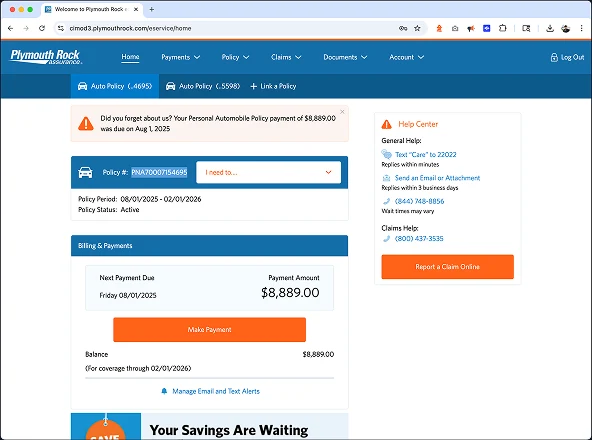
1Account home
Balance and "Make Payment" compete with promos, an AutoPay ad and the help center.
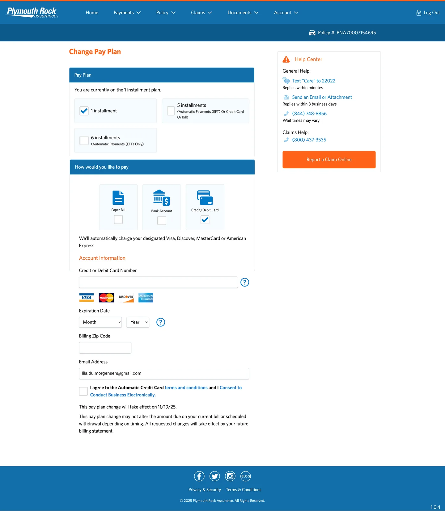
2Change pay plan
Complex rules limit which methods work with which plans, and saved wallet or AutoPay methods aren't shown.
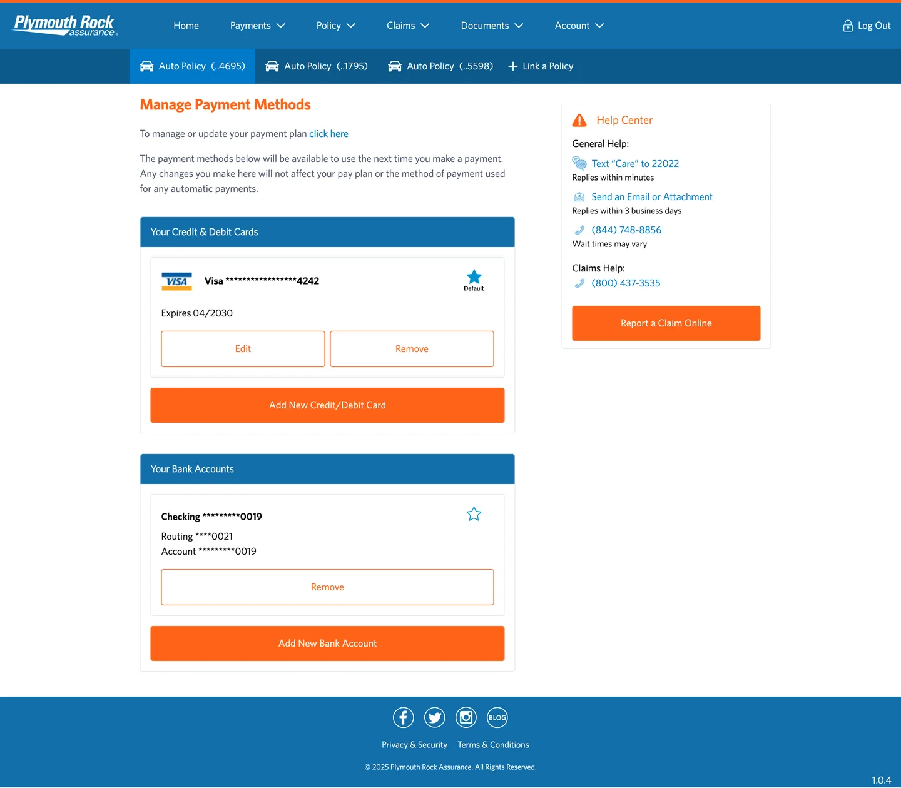
3Manage payment methods
Saved cards and bank accounts live on their own page, where Edit and Remove carry the same weight.
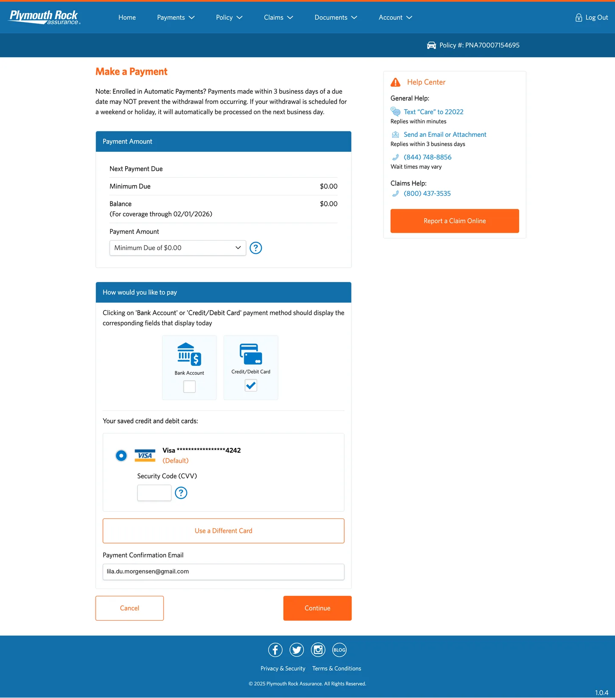
4Make a payment
A generic AutoPay warning leads the page whether or not the customer is on it. Payment method is a single choice built from checkboxes.
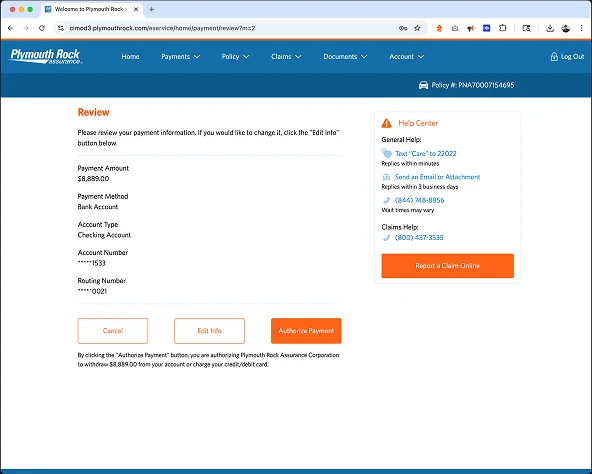
5Review
Cancel, Edit Info and Authorize carry similar weight. The authorization terms sit below the buttons.
Audit · Close up
Make a payment
The core step of the flow, where most friction concentrates.
Current portal · Make a payment
12345
Scroll
1
Warning before the task
AutoPay fine print is the first thing on the page, ahead of the amount owed.
2
Saved cards tucked under a type
Saved cards show up only after picking Credit/Debit Card, and still ask for the CVV.
3
Amount hidden in a dropdown
The amount to pay is buried in a select menu with an extra help icon.
4
Checkboxes for one choice
Bank or card is a single choice styled as checkboxes, with copy explaining the UI.
5
Persistent help panel
The full help center repeats on every step and pulls focus from the form.
Audit · Close up
Manage payment methods
Where customers save and maintain how they pay, and where the redesign changes the most.
Current portal · Manage payment methods
12345
Scroll
1
No status on saved methods
Cards show no expired or needs attention state, so problems surface only at checkout.
2
Split by type, not by use
Cards and bank accounts live in separate sections, so customers scan both to see their options.
3
Default isn't explained
A star marks the default card, but nothing says what default means or whether AutoPay uses it.
4
Competing primary actions
Two full width orange "Add" buttons carry the same weight as the main payment button.
5
AutoPay method not shown
Nothing shows which saved method AutoPay uses, even when the customer is enrolled.
+ Design Goals
Three goals guided every screen.
01
One wallet everywhere
The same saved payment methods appear when making a payment, setting up AutoPay or changing it.
02
Always show what AutoPay is doing
When the next automatic payment is scheduled, for how much, and on which method, before the customer acts.
03
Make AutoPay changes explicit
Switching the AutoPay method is its own confirmed step, with the current setup next to the new one.
+ Key Decisions
One wallet, and AutoPay you can see.
Every payment flow shares one list of saved methods, and AutoPay changes get their own short flow.
01
One list of saved payment methods
Visa ••1111Current
Visa ••4567
MC ••9012Expired 08/25
Before
Cards used for a one time payment weren't saved, and nothing showed which card AutoPay used.
The design response
Paying, setting up AutoPay and changing it all show the same selection cards. A Current tag marks the card in use, and expired cards stay visible but greyed out.
What it protects
One answer to "which cards do I have?" A new card can be saved with a checkbox so it shows up later.
02
AutoPay status shown before payment
Next automatic payment: $142.50 on 11/03
Payments made within 3 business days of the due date may not stop this withdrawal.
Before
Customers on AutoPay paid without knowing whether a withdrawal was still coming.
The design response
A banner at the top of Make a Payment shows the amount and date of the next automatic payment, plus the timing rule.
What it protects
It answers "will I be charged twice?" before the customer pays.
03
AutoPay changes confirmed side by side
Current
Visa ••1111
Updated
Visa ••4567
Update automatic payments
Before
Switching the AutoPay card had to be inferred from updating a card on file.
The design response
A short flow ends on a review that lists the current method and schedule above the updated ones. The button says what it does, not "Submit."
What it protects
No surprise charges. A note confirms the change won't affect the current bill or withdrawals already scheduled.
+ The Solution
A dedicated flow for AutoPay.
Make a Payment now leads with what AutoPay is doing. Changing AutoPay is its own four step flow, and every step uses the same saved methods.
Solution · Make a payment
AutoPay in view before paying
The page opens with the next scheduled withdrawal, then the amount, then one list of saved methods.
Customer portal · Make a payment
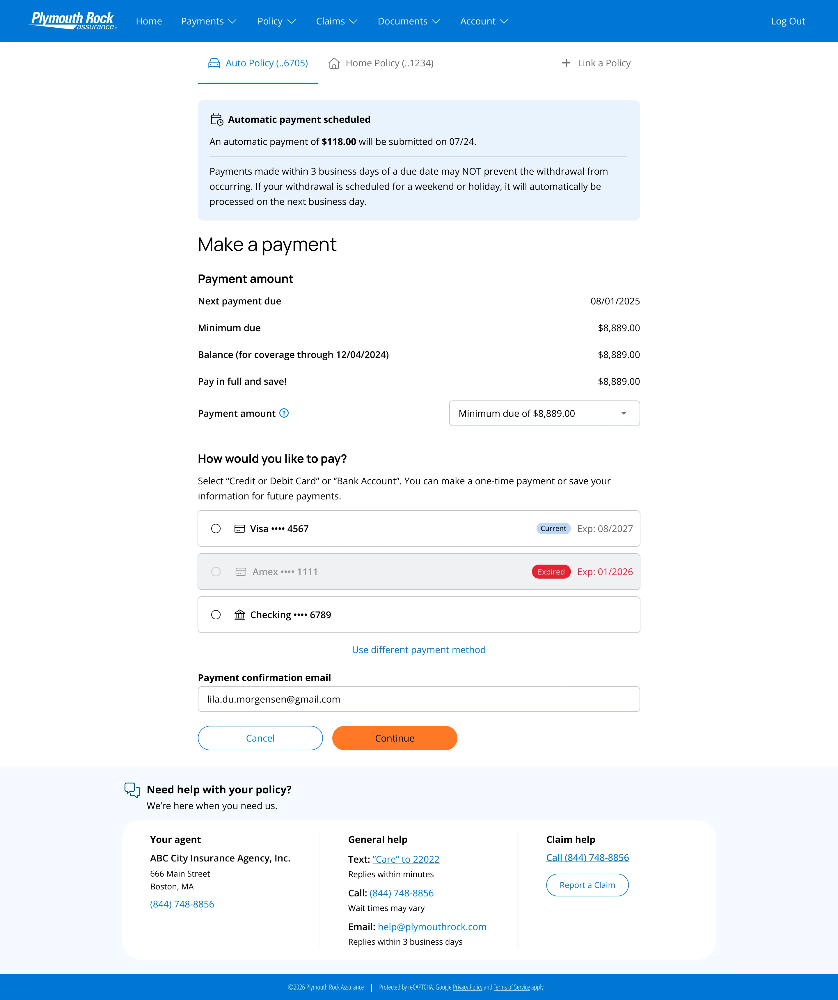
12345
Scroll
What changed
1
AutoPay status, not a warning
The banner states the amount and date of the next automatic payment, then the timing rule.
2
One list of saved methods
Cards and bank accounts are radio cards, with a Current tag on the method in use.
3
Expired methods stay visible
Greyed out with an Expired tag and date, so customers see why a card can't be picked.
4
One clear next step
Continue carries the weight. Adding a new method is a text link, not a second orange button.
Solution · Change AutoPay
Four steps, one decision each
Choose how often to pay. Pay plan is a single choice, so it's a radio list. How often to pay is separate from how to pay.
Step 1 · Payment plan
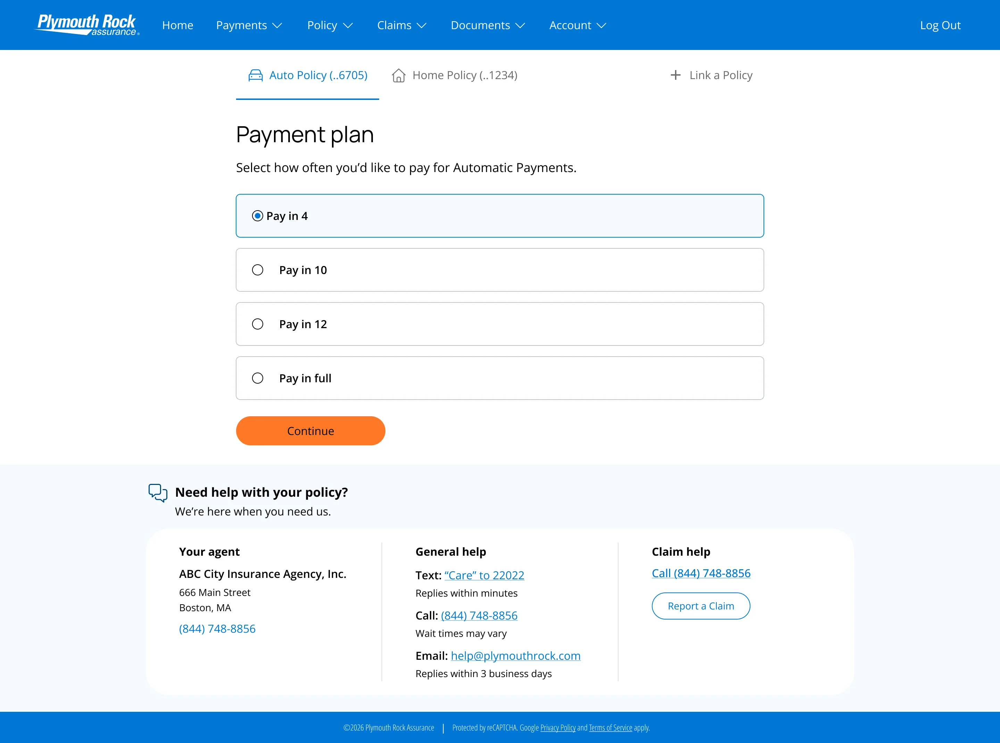
Scroll
Pick a saved method. The same list as Make a Payment. Expired cards can't be chosen, and a link adds a new card or bank account.
Step 2 · Payment method
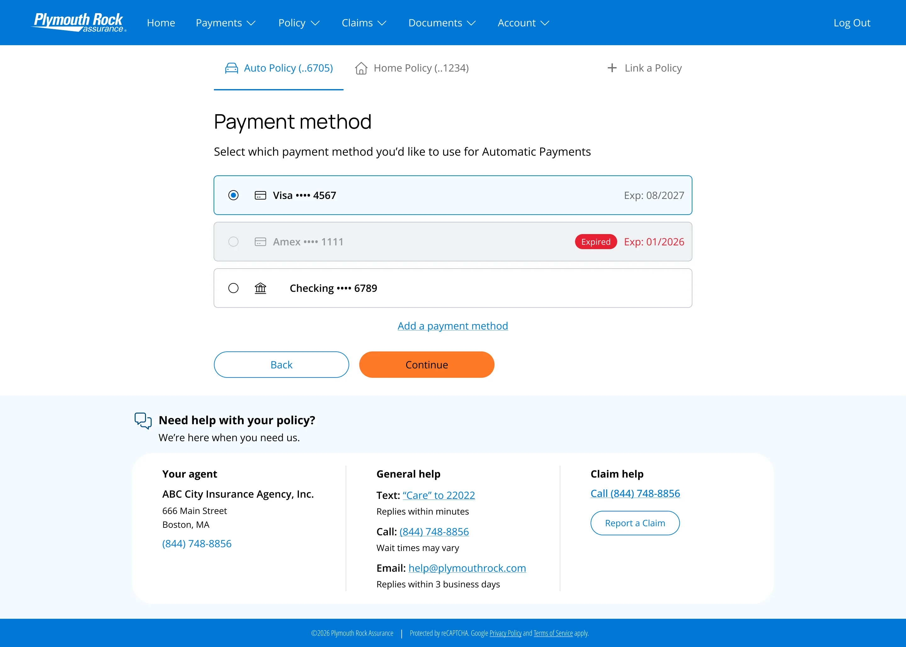
Scroll
Review current against updated. Each updated value links back to its step, and the button says exactly what it does.
Step 3 · Review
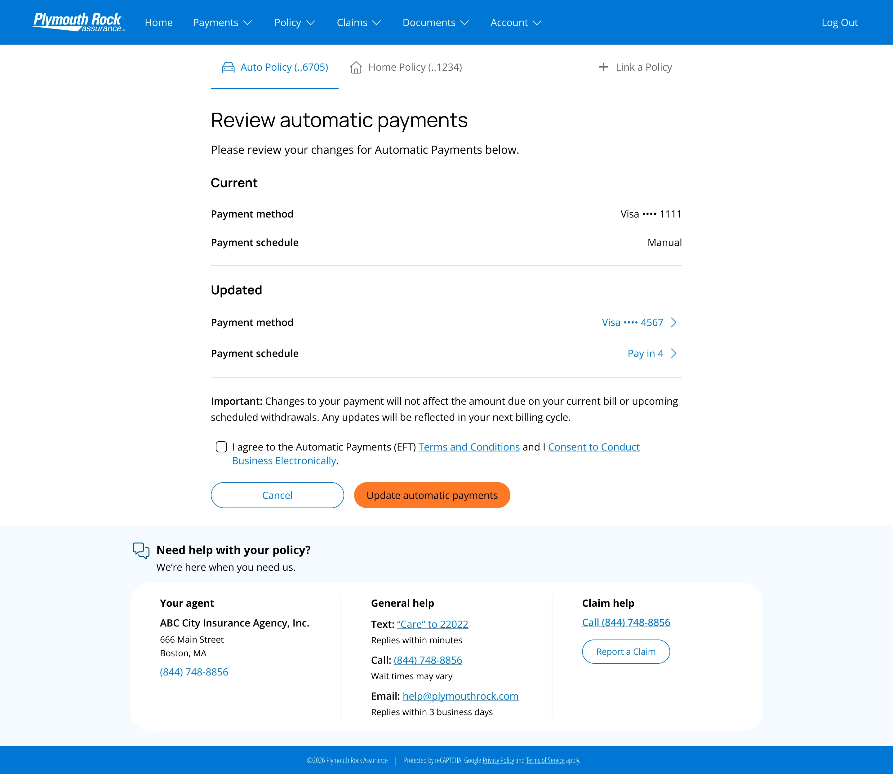
Scroll
Confirm in plain words. The new method and schedule, plus a note that the current bill isn't affected.
Step 4 · Confirmation
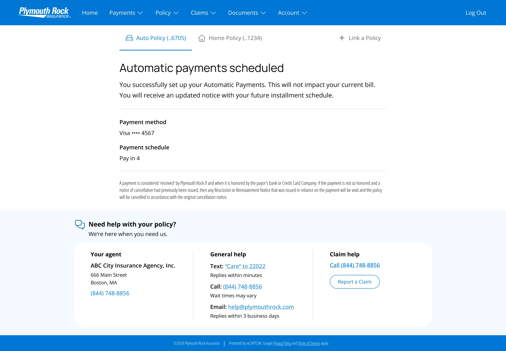
Scroll
Solution · Manage payment methods
The audit close up, redesigned
One list with clear status, and the method AutoPay uses is labeled.
Customer portal · Manage payment methods
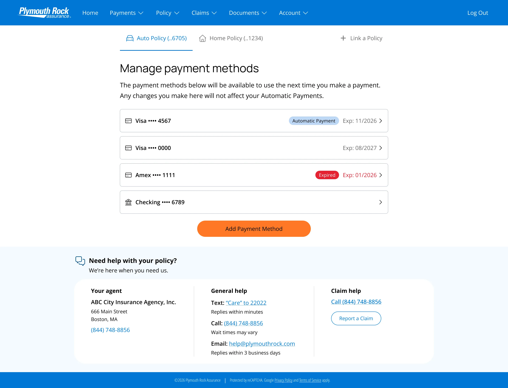
12345
Scroll
How it answers the audit
1
Status on every method
An Expired tag and red date flag a card here, before it fails at checkout.
2
One list for every method
Cards and bank accounts sit together, with the AutoPay method at the top.
3
Labels instead of a star
The unexplained star is gone. Tags say what each status means.
4
One primary action
A single Add Payment Method button replaces the two competing ones.
5
AutoPay method labeled
An Automatic Payment tag shows which method AutoPay uses, and the intro explains that edits here won't change it.
I also designed alternate states with the team, including a customer with no saved methods, adding a card versus a bank account, and expired methods.
+ Working Across Underwriting Groups
One flow, many rules.
I worked with the product owner and stakeholders from several underwriting groups, each with its own rules for payment plans and payment types.
Every group's constraints
Some plans are only available with automatic payments (EFT). The design covers each rule without splitting into separate flows.
Required language
Timing notices and EFT terms stay accurate and visible without burying the main action.
Everyone agreed on the goal from the start, so reviews focused on covering each group's rules and edge cases rather than debating direction.
+ Outcome
In development.
What changes for customers:
One wallet For paying, setting up AutoPay and changing it
AutoPay visible up front Status and timing shown before a payment is made
Confirmed, not inferred AutoPay changes reviewed as current versus updated
Once it launches, the clearest measure of success will be fewer calls to the call center about payment methods and AutoPay.
+ What I Learned
Look at the whole system before fixing a screen. The confusion didn't come from one bad screen. Payments and the wallet were two separate systems, and mapping the full flow first is what showed that.
Show customers what's happening behind the scenes. People made mistakes because they couldn't see which card AutoPay was using. Showing current and updated settings side by side did more than extra instructions would have.